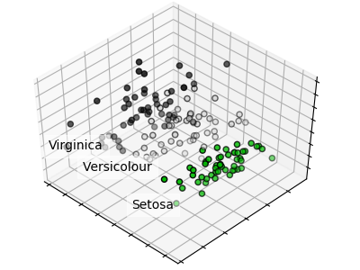

Note
Click here to download the full example code or run this example in your browser via Binder
PCA example with Iris Data-set¶
Principal Component Analysis applied to the Iris dataset.
See here for more information on this dataset.
Out:
print(__doc__)
# Code source: Gaël Varoquaux
# License: BSD 3 clause
import numpy as np
import matplotlib.pyplot as plt
from mpl_toolkits.mplot3d import Axes3D
from sklearn import decomposition
from sklearn import datasets
np.random.seed(5)
centers = [[1, 1], [-1, -1], [1, -1]]
iris = datasets.load_iris()
X = iris.data
y = iris.target
fig = plt.figure(1, figsize=(4, 3))
plt.clf()
ax = Axes3D(fig, rect=[0, 0, .95, 1], elev=48, azim=134)
plt.cla()
pca = decomposition.PCA(n_components=3)
pca.fit(X)
X = pca.transform(X)
for name, label in [('Setosa', 0), ('Versicolour', 1), ('Virginica', 2)]:
ax.text3D(X[y == label, 0].mean(),
X[y == label, 1].mean() + 1.5,
X[y == label, 2].mean(), name,
horizontalalignment='center',
bbox=dict(alpha=.5, edgecolor='w', facecolor='w'))
# Reorder the labels to have colors matching the cluster results
y = np.choose(y, [1, 2, 0]).astype(np.float)
ax.scatter(X[:, 0], X[:, 1], X[:, 2], c=y, cmap=plt.cm.nipy_spectral,
edgecolor='k')
ax.w_xaxis.set_ticklabels([])
ax.w_yaxis.set_ticklabels([])
ax.w_zaxis.set_ticklabels([])
plt.show()
Total running time of the script: ( 0 minutes 0.143 seconds)